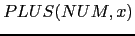
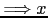
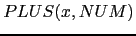
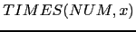
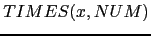

Sig: Asignación de Direcciones
Sup: Patrones Árbol y Transformaciones
Ant: Patrones Árbol y Transformaciones
Err: Si hallas una errata ...
Práctica: Casando y Transformando Árboles
Complete su proyecto para el compilador de Tutu completando
las subrutinas match_and_transform tal y como se explicó en la sección
4.12.
Ademas del plegado
de constantes use las nuevas subrutinas
para aplicar simultáneamente
las siguientes transformaciones algebraicas:
|

|
{ $NUM{VAL} == 0 } |

|
|

|
{ $NUM{VAL} == 0 } |
|
|

|
{ $NUM{VAL} == 1 } |
|
|

|
{ $NUM{VAL} == 1 } |
|
- Dado un programa como
int a; a = a * 4 * 5;
¿Será plegado el 4 * 5?
Sin embargo si que se pliega si el programa es de la forma:
int a; a = a * (4 * 5);
No intente en esta práctica que programas como el primero o como
4*a*5*b sean plegados.
Para lograrlo sería necesario introducir transformaciones adicionales
y esto no se requiere en esta práctica.
- ¿Existe un orden óptimo en el que ejecutar las transformaciones?
- Ponga un ejemplo en el que sea beneficioso ejecutar el plegado primero.
- Ponga otro ejemplo en el que sea beneficioso ejecutar el plegado después.
- ¿Es necesario aplicar las transformaciones reiteradamente?
- ¿Cuál es la condición de parada?
- Como es habitual la pregunta
6 tiene
una respuesta TIMTOWTDI:
una posibilidad la da el módulo
Data::Compare
el cual puede obtenerse desde CPAN y que permite comparar estructuras de datos,
pero existe una solución mas sencilla. ¿Cuál?
Sig: Asignación de Direcciones
Sup: Patrones Árbol y Transformaciones
Ant: Patrones Árbol y Transformaciones
Err: Si hallas una errata ...
Casiano Rodríguez León
2013-03-05